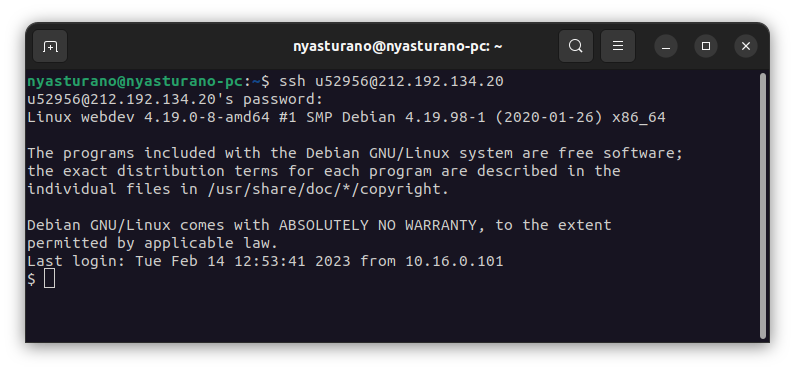
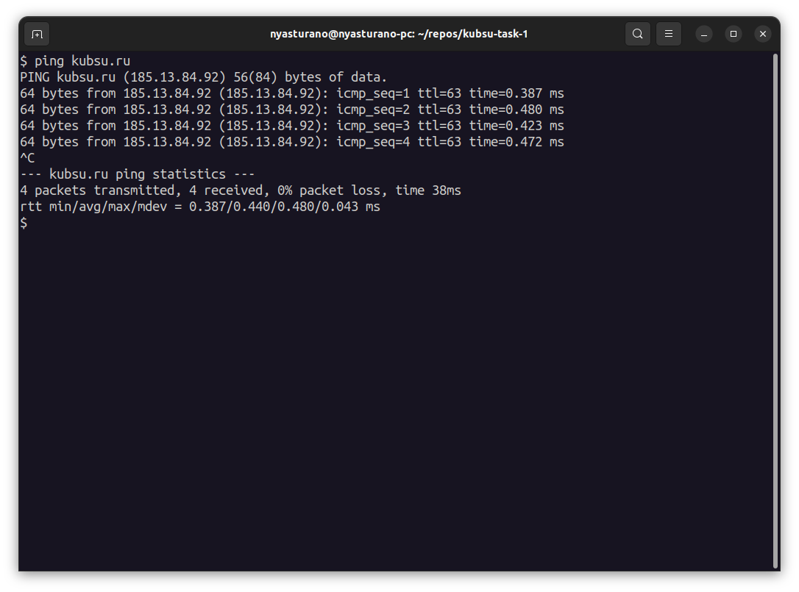
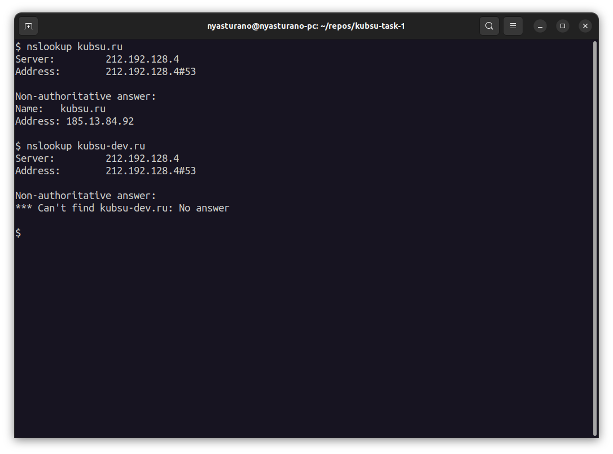
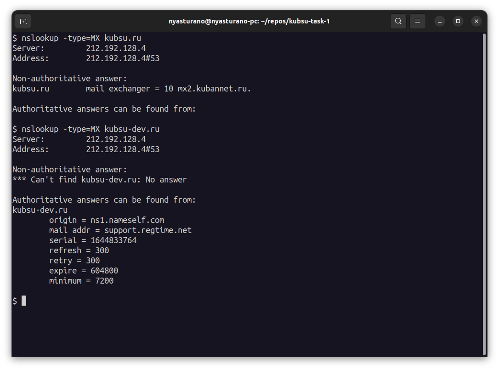
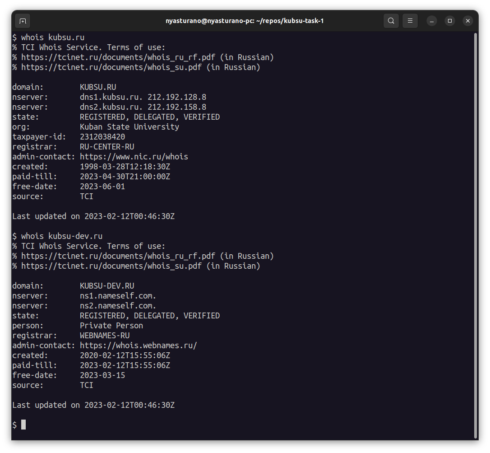
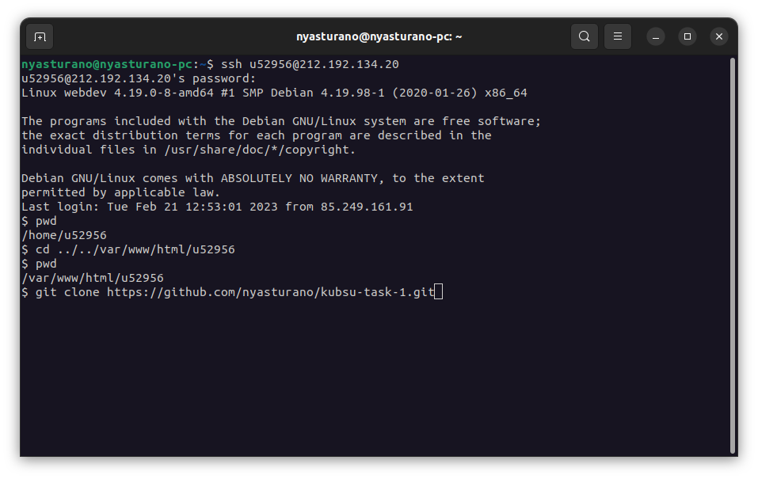
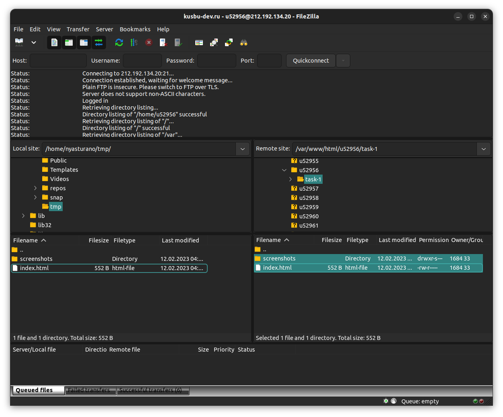
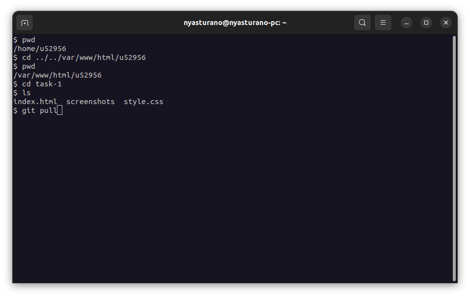

Подключение к удаленному серверу через протокол ssh с помощью терминала

Запуск команды ping
Демонстрируется связь между двумя узлами: kubsu.ru и удаленным сервером, к которому
мы в данный момент подключены. Таким образом можно узнать IP-адрес веб-сервера kubsu.ru

С помощью команды nslookup можно просмотреть все А-записи домена kubsu.ru и kubsu-dev.ru.
Для получения A или MX записей мы связываемся с DNS-сервером и получаем информацию от него.
А-запись указывает на IP-адрес веб-сайта или доменного имени.

С помощью команды nslookup можно просмотреть все MX-записи домена kubsu.ru и kubsu-dev.ru.
Запись MX определяет почтовые серверы, ответственные за прием сообщений электронной почты, отправленных на доменное имя.

С помощью команды whois можно получить информацию о домене, например, дату регистрации и возраст домена. Получаем информацию о kubsu.ru и kubsu-dev.ru.

Подключились к удаленному серверу через ssh
Перешли в нужную папку с помощью команды cd
Посмотреть путь, по которому мы находимся, можно с помощью команды pwd
Чтобы скопировать git-репозиторий с удаленного сервера, используем команду git clone и копируем репозиторий через протокол HTTPS

Чтобы скопировать файлы с удаленного сервера на компьютер, изпользуется FTP-клиент FileZilla
Для этого необходимо подключиться к серверу, ввести логин и пароль
Слева открыта папка назначения на локальном компьютере, справа открыта нужная папка на сервере

Для того, чтобы загрузить изменения на сервер, используем гит-репозиторий.
Опять переходим в нужную папку, можем посмотреть список файлов с помощью команды ls.
Чтобы подгрузить изменения из удаленного репозитория, используем команду git pull.